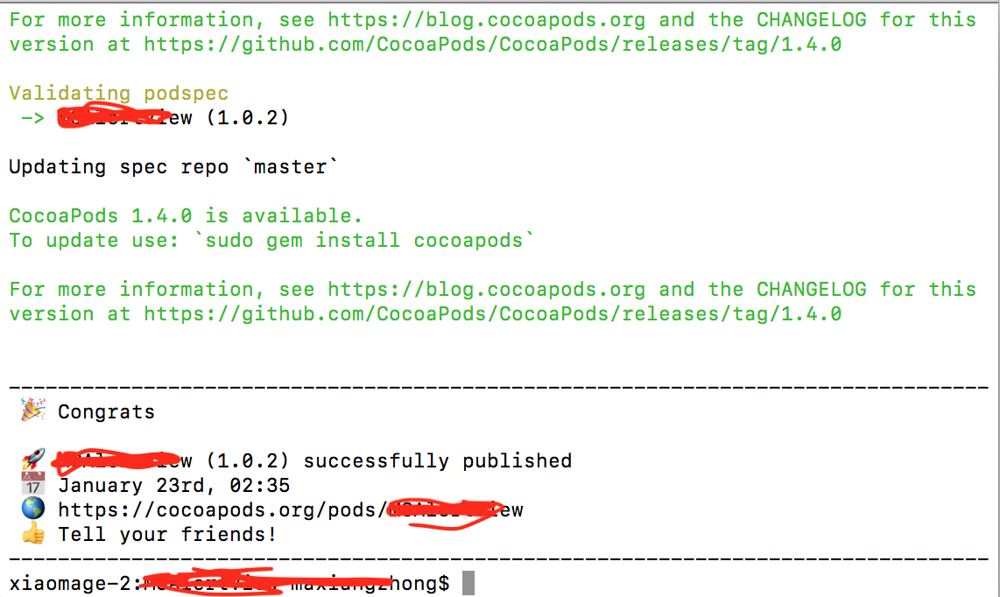

在Github创建一个仓库(这个无需多累赘,注意一定要选择上 MIT) .
clone 远程库到本地,(我这里用的是 Github 客户端,首先在本地创建一个空文件夹,登录github账户,点击file –>clone repository.选择对应的项目和 本地关联文件夹)
在文件夹下创建项目工程(完整的demo,能跑起来的),把自己的开源组件放到一个独立的文件夹下
提交项目到github,命令
$ git push origin master注册trunk
1
2$ pod trunk register eloy@example.com 'Eloy Durán’ #注册会发带验证链接的邮件到邮箱地址，名称无法修改
$ pod trunk me #可查询注册信息。生成podspec 文件,
$ pod spec create xxxxx
这里最好复制已经发布的 podspec,这里就不多累赘了打tag
1
2$ git tag 1.0.1 #给源代码打版本标签，与podspec文件中version一致即可
$ git push --tag验证 podspec 文件合法性,
$ pod lib lint,如有问题可参考 [链接] ( https://www.jianshu.com/p/a181b47f8881)更新github 仓库
1
2
3
4$ git add . #将当前目录下所有文件和子目录的修改记录到Git索引中
$ git status #列出当前目录下被修改还未提交的状态
$ git commit -m ‘first commit’ #提交被add的改动
$ git push origin master #push代码到Git发布到cocoapods
$ pod trunk push xxxxxxx.podspec
显示如下信息则表示发布成功
执行
$ pod trunk me可查看到相关podspod search xxxxx 搜索到自己的私有库.
可能会出现搜索不到的情况,下面是解决方法
执行 $ pod setup
在终端输入pod setup,会出现Setting up CocoaPods master repo，等几分钟，会输入Setup completed，说明pod setup执行成功。
结果pod search还是失败
在终端输入pod search xxxxx
依然还是提示Unable to find a pod with name, author, summary, or descriptionmatching ‘xxxxx’。
但是我输入pod search pop，却有相应的结果。
删除~/Library/Caches/CocoaPods目录下的search_index.json文件
pod setup成功后会生成~/Library/Caches/CocoaPods/search_index.json文件。
终端输入rm ~/Library/Caches/CocoaPods/search_index.json
删除成功后再执行pod search
执行pod search
终端输入：pod search xxxxx(不区分大小写)
输出：Creating search index for spec repo ‘master’.. Done!，稍等片刻就会出现所搜索的类库。